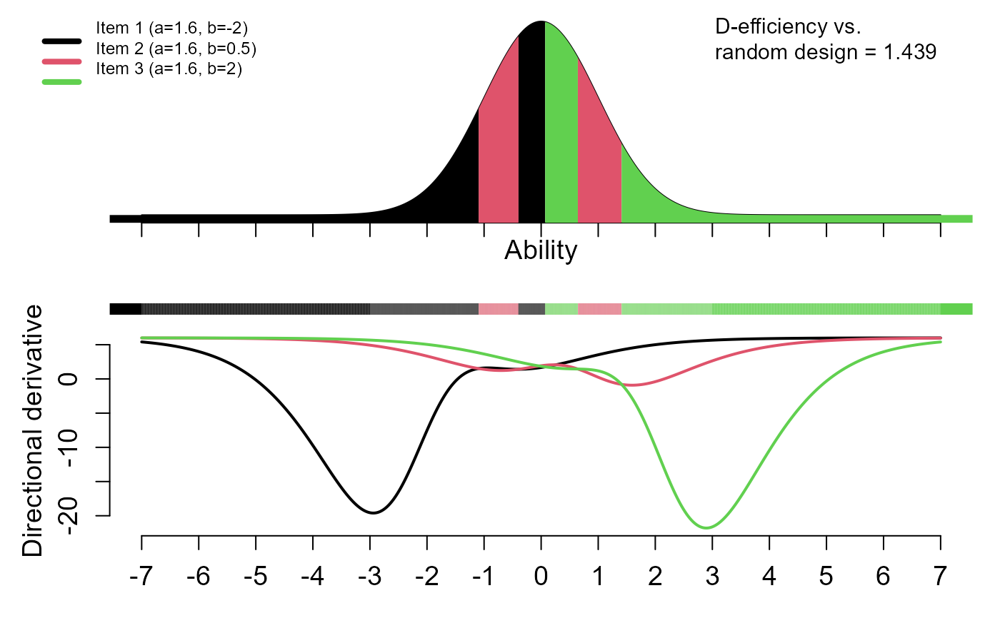

Generate plot for optimal design with four possible layouts. All layouts have design first incl. efficiency vs. random design; then line with item having minimal directional derivative
drawdesign(
yyy,
ip,
ablim = 7,
ylowl = -9999999,
refline = 0.002,
textout = TRUE,
itemnum = NA,
layout = 1,
colvec = 1:12
)matrix with item parameters for all items (number of rows determines number of items; number of column 2 (2PL) or 3 (3PL or mixed 2/3-PL with NA for 2PL-items in third column).
ability limits; plots will be made in the range [-ablim, ablim]
y low level (minimum value of directional derivative shown in the plot)
reference line correspond to desired minimum violation of equivalence theorem
If textout=TRUE (default), the item parameters will be printed if number of items $<5$ and the efficiency vs. the random design; if textout=FALSE, no such text is printed
number of items
layouts of plots
Layout 1: third panel has directional derivatives (cut at ylowl or lowest value of dirdev)
Layout 2: third panel has violations of equivalence theorem, should be ideally small. Stopping criterion could be <0.002 (refline)
Layout 3: third panel monitors efficiency of design vs. iteration number
Layout 4: third panel monitors violations of equivalence theorem vs. iteration number
Layout 5: third panel shows item characteristic curves
Layout 0: only one panel with design
vector of color sequence for items (default is the R-default black, red, green, etc.)
# 2PL-models for two items; parameters (a, b)=(1.6, -1) and (1.6, 1), respectively
ip <- cbind(c(1.6, 1.6),c(-1, 1))
yyy <- optical(ip)
#> -----> Outer iteration = 1
#> ++++++++++++++++++
#> -----> Adapt grid; outer iteration = 2
#> ++
drawdesign(yyy=yyy, ip=ip, ylowl=-1000, refline=0.002, layout=1)
